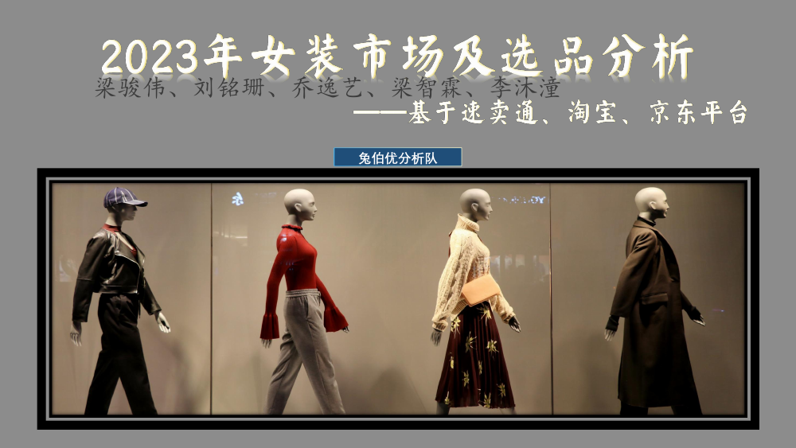
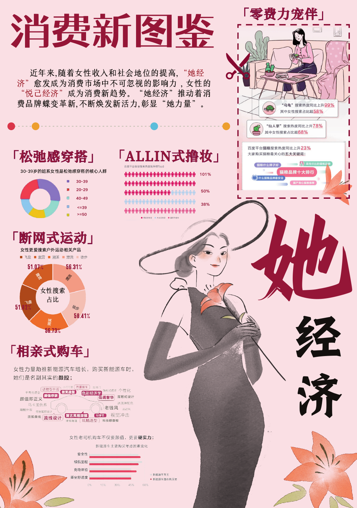

PORTFOLIO · 2026
HALO!
我是许秋容
经济学背景，沿着数据、内容与人的交叉点工作。
我喜欢把复杂信息整理清楚，再把洞察变成可执行的方案。
DATA
ANALYSISCONTENT
STRATEGYkeep curious
SCROLL TO EXPLORE ↓ANALYSISCONTENT
STRATEGYkeep curious
PROFILE
00 / CAPABILITY
关于
数据分析、内容策略与项目执行，是我解决问题的三条线索。
看见数据
从表格、问卷和文本中找到值得解释的变化。
形成判断
把研究结果转化为策略、内容和可执行方案。
推动落地
在团队协作中跟进流程、细节与最终交付。
ExcelPower BIPythonSPSS内容运营活动策划
EXPERIENCE
01 / EXPERIENCE
实习
从严谨的数据核验，到组织分析与品牌内容。
奇瑞项目 · 内容运营
参与矩阵账号内容发布、周月报整理与热点拆解；围绕汽车产品点分析传播内容，并尝试用 AI 辅助生成和迭代短视频脚本。
- 连续参与品牌视频发布与传播执行
- 拆解热点、受众画像与产品卖点
- 沉淀“热点 × 品牌 × AI”内容方法
人力资源部实习生
筛选 2 万+份简历，清洗 3 万条数据，协助完成 6000+员工季度考核；用 Excel 与 Power BI 输出可视化分析，支持招聘与评优决策。
税费监管组实习生
核对 80+企业税费账目、清理 70+笔逾期款项，并完成 400+份税务凭证的分类与电子化归档。
PROJECTS
02 / SELECTED PROJECTS
项目
内容创作、活动策划与数据建模的交叉实践。
DATA RESEARCH · CONTENT STRATEGY · EVENT PLANNING · MARKET ANALYSIS · DATA RESEARCH · CONTENT STRATEGY · EVENT PLANNING · MARKET ANALYSIS ·

RESEARCH · TEAM LEAD
AI 赋能数字营销
以《哪吒2》为案例，研究情感共振与文化认同如何影响观众决策。抓取 9000+条评论，清洗得到 6147 条有效数据，结合 LDA、TF-IDF、SPSS 与决策树完成分析。

BUSINESS ANALYSIS
跨境电商市场分析
分析亚马逊女装与男鞋市场，结合财务数据、消费者偏好和竞争格局制定运营策略。

DATA STORYTELLING
女性财富守护者
把女性经济与财富安全相关数据转化为更容易理解的视觉叙事，完成数据分析、页面组织与汇报表达。
校园活动策划
参与迎新、职业规划讲座、反诈宣传、学院晚会等活动，覆盖 1500+参与人次；从物料、流程到现场协作完整推进。
10+活动项目LIFE & BEYOND
03 / LIFE & BEYOND
生活
工作之外，我通过辩论、写作和团队活动保持感受力。
近 40 场队内外模辩，在不同立场中训练判断与表达。
学院公众号报道与编辑，累计完成 20+次活动报道。
班长、辅导员助理与学生组织经历，让执行更有温度。
“先理解问题，
再寻找更好的表达。”
再寻找更好的表达。”